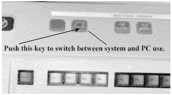
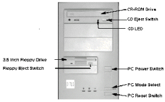
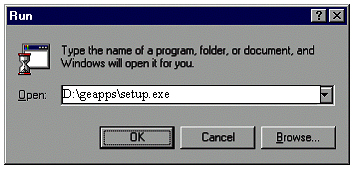
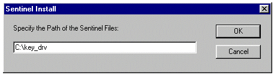
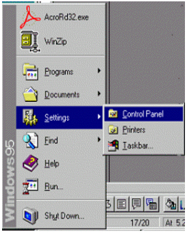

Operating Documentation
Direction 5133315-3, Rev# 14
Signa EXCITE HD 1.5T Service Methods
Module Version 1.0, Version Date 5/15/07
Operating Documentation |
| Required Persons | Preliminary Reqs | Procedure | Finalization |
|---|---|---|---|
| 1 |
This procedure describes loading software on the Operator Workspace PC computer for Signa Horizon LX and Signa CVMR systems. This section describes the PC software load procedure. To complete the software load, several disks containing software and drivers are used.
| NOTE: | The software package which includes Microsoft Windows 95 also
includes a Microsoft Windows 95 user manual. On the front of this manual is
a Microsoft “Certificate of Authenticity”. The Certificate of
Authenticity contains the Product ID Code which is needed during the install
process. Without this code the software can not be installed. Be sure to keep
the software, Certificate of Authenticity and or the Product ID Code in a
safe place in the event the PC will need to be reloaded at a later date. For this procedure, you must have the IP address for both the SGI Host computer and for the PC. |
The Signa Horizon LX utilizes one keyboard shared between the SGI host computer and the PC system. To switch control of the keyboard and mouse from the host to the PC or back again toggle the system select switch found on the keyboard.
Illustration 1: Keyboard

Below is shown the standard Signa Horizon LX PC front panel with drive locations and power and reset controls.
Illustration 2: Front Panel

Look at your Windows 95 CD-ROM. If it is labeled Windows 95 Upgrade, proceed with Step 1. Look at the Windows 95 manual. On the front cover is your product ID. If it has “OEM” in the ID number, proceed with Step 2.
For Windows 95 Upgrade
Switch the system keyboard control to the PC subsystem. Insert the PC boot floppy into the PC’s 3.5 inch floppy drive and then insert the Windows 95 CD ROM into the PC’s CD ROM drive. Press the reset button on the PC. The PC boots from the floppy and stops at the PC load from cold menu.
The first function to be performed is option “A - Run Fdisk”.
Enter N and <Enter> to enable large disk support
Press 3 and <Enter> to delete the partition or logical DOS drive
Press 1 and <Enter> to delete the primary DOS partition
Press 1 and <Enter> to delete partition #1
Type the volume label as it appears at the top of the screen and press <Enter>
Enter Y to the prompt “Are you sure…” and press <Enter>
Press <Esc> once
Press [1] and <Enter> to create the DOS partition or logical DOS drive
Press 1 and <Enter> to create the primary DOS partition
Enter Y and <Enter> to use the maximum available hard drive size
Press <Esc> to exit the fdisk utility
Press <CTRL>-<ALT>-<DELETE> to reboot the computer
The PC load from cold menu appears again. To perform the setup of software, choose option [B]. The following message appears (type Y to continue):
WARNING! This procedure will Install LX2 PC Software - ANY OTHER USER SOFTWARE WILL BE LOST - NETWORK CONFIGURATION WILL BE SET TO FACTOR DEFAULTS AND WILL NEED TO BE RESET TO SITE CONFIGURATION. DO YOU WISH TO CONTINUE?
Enter: [Y/N]? Y
Type Y to the question “Proceed with format?” and press <Enter>.
The computer now begins installing Windows 95. A message appears stating that the directory C:\Windows already exists. When asked if you want to continue, click on [Yes]. When the load is complete the system reboots and reenters the PC load from cold menu. At this time type X to exit to DOS. Remove both the CD ROM and the floppy disk. Store both in a safe location. Reboot the PC by pressing <CTRL>-<ALT>-<DELETE> on the keyboard.
The computer reboots into Microsoft Windows 95. As it reboots, it asks for a user name and password. Enter the username of sdc, leaving the password blank, click on [OK]. The computer will then want to verify the password. Make sure both lines are blank and click on [OK] again. The computer finalizes the first part of the installation and reboots itself.
After the computer restarts, click on the [Close] button to close the “Welcome to Windows 95” screen.
Click on Start/Settings/Control Panel. Now double-click on [Add New Hardware]. Click on [Next], [Next], and [Next] again. The computer searches for new hardware. This may take about 5 to 10 minutes. When the computer finishes, click on [Finish]. When prompted to restart the computer, click on [Yes].
When the computer reboots, a message asks if you want to continue to
receive DHCP error messages. Click on [No]. The next
window to display is the Welcome to Windows 95 screen. Click on the  by
“Show this Welcome Screen” to clear the check-box. Click on the [Close] button
on the Welcome screen to close it.
by
“Show this Welcome Screen” to clear the check-box. Click on the [Close] button
on the Welcome screen to close it.
The Control Panel window should still be showing. Double-click on [System]. Under the Device Manager tab in the System Properties window, look for Display Adapters. Click on the preceding [+]. Click on [ATI VGA Wonder] and click on [Remove] and [OK]. The computer prompt you to restart. Click on [Yes].
As the computer reboots, it identifies the additional hardware. First is the PCI VGA Compatible Display Adapter. Put the Signa Horizon LX PC Software in the computer. As the New Hardware Found Wizard appears, click on [OK], in the path edit window type d:\ati_drv and [OK] again. The computer will need to restart. Click on [Yes] to restart.
After the computer restarts, click on the by “Show this screen...”
to clear the check-box on the ATI Desktop Help window. Click on the [X] button
in the upper right corner of the ATI Desktop Help window to close it. Close
the Control Panel window by clicking on the [X] button
in the upper right corner of the Control Panel window.
For Windows 95 OEM Version
Switch the system keyboard control to the PC subsystem. Insert the PC boot floppy into the PC’s 3.5 inch floppy drive and then insert the Windows 95 CD ROM into the PC’s CD ROM drive. Press the reset button on the PC. The PC boots from the floppy and stops at the PC load from cold menu.
The first function to be performed is option “A - Run Fdisk”.
Enter Y and <Enter> to enable large disk support
Press 3 and <Enter> to delete the partition or logical DOS drive
Press 1 and <Enter> to delete the primary DOS partition
Press 1 and <Enter> to delete partition #1
Type the volume label as it appears at the top of the screen and press <Enter>
Enter Y to the prompt “Are you sure…” and press <Enter>
Press <Esc> once
Press 1 and <Enter> to create the DOS partition or logical DOS drive
Press 1 and <Enter> to create the primary DOS partition
Enter Y and <Enter>] to use the maximum available hard drive size
Press <Esc> to exit the fdisk utility
Press <CTRL>-<ALT>-<DELETE> to reboot the computer
The PC load from cold menu appears again. To perform the setup of software, choose option [B]. The following message will appear (type Y to continue):
WARNING! This procedure will Install LX2 PC Software - ANY OTHER USER SOFTWARE WILL BE LOST - NETWORK CONFIGURATION WILL BE SET TO FACTOR DEFAULTS AND WILL NEED TO BE RESET TO SITE CONFIGURATION. DO YOU WISH TO CONTINUE?
Enter: [Y/N]? Y
Type Y to the question “Proceed with format?” and press <Enter>.
The computer begins installing Windows 95. A message appears stating that the directory C:\Windows already exists. When asked if you want to continue, click on [Yes]. When the PC asks for the OEM number to be reentered, click on [Reenter] and type in the OEM number found with the Windows 95 Certificate of Authenticity and click on [Next]. When the load is complete the system reboots and reenters the PC load from cold menu. At this time type X to exit to DOS. Remove both the CD ROM and the disk. Store both in a safe location. Reboot the PC by pressing <CTRL>-<ALT>-<DELETE> on the keyboard.
The computer reboots into Microsoft Windows 95. As it reboots, the computer asks for a user name and password. Enter the username of sdc, leaving the password blank, click on [OK]. The computer will then want to verify the password. Make sure both lines are blank and click on [OK] again. The computer finalizes the first part of the installation and reboots itself.
After the computer restarts, click on the [Close] button to close the “Welcome to Windows 95” screen. Click on Start/Settings/Control Panel. Now double-click on [System].
Under the Device Manager tab in the System Properties window, look for Display Adapters. Click on the preceding [+]. Click on [Standard PCI Graphics Adapter] and click on [Remove] and [OK]. The computer prompt you to restart. Click on [Yes].
As the computer reboots, it identifies the additional hardware. First is the Standard PCI Graphics Adapter. Put the Signa Horizon LX PC Software Cdrom in the computer. As the Update Device Driver Wizard appears, click on [Next]. Click on [Other Locations], type in the path of D:\Video and click [OK]. The computer identifies the updated driver (STB Velocity 128 (TV support)). Click on [Finish]. Next, you are prompted for a disk. Click on [OK] to acknowledge the message, enter the path D:\Video, click on [OK]. The computer will need to restart. Click on [Yes] to restart.
After the computer restarts, the first window to display is the Welcome
to Windows 95 screen. Click on the by Show this Welcome Screen
to clear the check-box. Click on the [Close] button
on the Welcome screen to close it. The Control Panel window should still
be showing. Double-click on [System]. Under the Device
Manager tab, click on the [+] preceding Other Devices.
Click on [OPL3-SA3 Snd System], click on [Remove],
and click on [OK]. Restart the computer by clicking
on [Start]/[Shutdown]/[Restart
the computer]/[Yes].
As the computer restarts, it identifies the audio system. As the Update Device Driver Wizard appears, click on [Next]. Click on [Other Locations], type in the path of D:\Audio and click [OK]. The Update Device Driver Wizard identifies the audio system (Yamaha OPL3-SAX) and prompts you to click on [Finish] to complete the setup. You are then prompted for disk 1. Click on [OK] to acknowledge the message, type in D:\Audio for the path, and click on [OK]. You are then prompted for the Windows 95 CD ROM. Click on [OK] to acknowledge the message, enter the path of C:\WIN95, and click on [OK].
The Control Panel window should still be showing. Double-click on [System]. Under the Device Manager tab, click on the [+] preceding Other Devices. Click on [PCI Ethernet Controller], click on [Remove], and click on [OK]. Restart the computer by clicking on [Start]/[Shutdown]/[Restart the computer]/[Yes].
As the computer restarts, the Update Device Driver Wizard identifyies the network card. Click on [Next]. Click on [Other Locations], type in the path of D:\Network and click on [OK]. The Update Device Driver Wizard identifies the network card (3Com Fast Etherlink XL 10/100Mb TX Ethernet Adapter) and prompts you to click on [Finish] to complete the setup. You are then prompted for disk 2. Leave the cdrom in and click on [OK] to acknowledge the message, enter the path D:\Network, and click on [OK]. The computer then asks for the Windows 95 CD ROM. Click on [OK] to acknowledge the message, enter the path C:\WIN95, and click on [OK]. A message will ask if you want to continue to receive future DHCP messages. Click on [No]. Close the Control Panel window by clicking on the [X] in the upper right corner of the window.
This section explains how to load Signa applications and drivers to the PC’s hard drive.
With the Signa Horizon LX PC Software CD-ROM still in the PC, move the system cursor down to [Start] button and single click. Choose the [Run] option with a single click.
Illustration 3: Run Window

In the Open dialog box type: D:\geapps\setup.exe Click the [OK] Button to start the Install. A dialog box will appear. Chose the [Next] button. The entire load takes about 2 minutes to complete.
A pop-up window appears labeled: “Sentinel Driver Setup Program”. In the left corner of the window is the [Functions] menu item. Use the system cursor and left mouse button to select [Functions] and then the [Install Sentinel Driver] option. Another pop-up window appears, asking for the location of the driver.
Illustration 4: Sentinel Install Window

In the edit box type: c:\key_drv then push the [OK] button. The Installation takes < 1 second.
When done, the program informs you that the driver has been installed. Click [OK] to acknowledge the message. At this point, exit the program by clicking on [Functions] and [Quit], remove the CD from the computer and reboot the computer by clicking on [Yes, I want to restart my computer now] and [Finish].
When Windows 95 restarts at this time, WaveTime and Security Key programs will automatically start. Some errors may be noted because the PC network configurations are not set. These errors can be ignored at that time. The Service Key window appears. Push the [Hide] button to get the window out of the way. Minimize any windows and continue with this section. (PC Configuration contains instructions on configuring the PC.)
The computer may behave erratically until the Sentinel Driver is configured. Attach the Hardware Key to the computer and continue with the configuring of the Sentinel Driver. After configuring, the Key may be removed.
You must now configure the Sentinel driver. Before configuration can
begin, minimize the Scantime window by clicking on the minimize button in
the upper right corner of the Scantime window. (Minimize button  )
)
Click on [Start] | [Run], type C:\Windows\System\Rnbosent\Sentw95.exe and click on [OK]. Click on [Functions] and [Configure driver]. Select LPT2 (physical address of 278) and click on [Edit]. Click on [No] to the question “Use this port?” and click on [OK]. Click on [OK] to the Sentinel driver window when it asks if the user wants to continue. Click on [OK] again. Finally click on [OK] to the message about needing to restart the computer. Quit the program by using the system cursor and left mouse button to select [Functions] and then the [Quit] option. Restart the computer by clicking on [Start] | [Shutdown] | [Restart computer] | [Yes].
The following configurations are necessary to make sure that the PC subsystem will be able to communicate with the Signa host computer.
Accessing Configuration Controls
Illustration 5: Start Menu

| NOTE: | The Task bar containing the start button needs to be configured to “auto hide.” Click on [START] | [SETTINGS] | [TASKBAR]. Click on the checkbox in front of AUTO HIDE. Click on [OK]. Once the Task bar is set to Auto hide, it can be visible by dragging (no clicking) the mouse pointer down to the bottom of the screen which will cause the system to show the Task Bar again. Moving the cursor away from the bottom of the screen will cause the Task bar to hide again. |
Click on [Start] | [Settings] | [Control Panel]. The Control Panel displays icons used to access control setting.
Keyboard Setting
| NOTE: | The default configuration for the keyboard is English. There is no need to complete this section unless you are using a keyboard other than English. |
1. Find the Icon “Keyboard”, then double click
it with the left mouse button. 
Choose the [Language] tab. To change the default language, select the [Add] button. A pop-up box will give a selection of countries to choose from. Select desired country for the keyboard being used on the system you are loading. Then select the [OK] button, then the [Apply] button at the bottom of the Properties box. Windows will need to reboot for changes to take affect.
Illustration 6: Keyboard Properties Window

Network Configuration
Locate and open the [Network] icon by double clicking
with the left mouse button. 
At the main Network box, select the [TCP/IP - 3Com…….] entry and select the [Properties] button.
Illustration 7: Network Window

Select the [IP Address] tab. Make sure the “Specify an IP Address” is selected. Enter the IP address that will be used for the system PC. For Subnet Mask enter; 255.255.255.0 (or site Netmask) . Select the [OK] button at the bottom of the “Properties” page, then the [OK] button at the bottom of the “Network” page. Close Control Panel by clicking on the [X] in the upper right corner of the window. Select [YES] to reboot the PC for changes to take effect.
| NOTE: | Use the IP Address and Subnet Mask provided by your network administrator. |
Illustration 8: TCP/IP Properties Window

LCD Screen Resolution
| NOTE: | Only do this procedure if the LCD PC display is a Panoview 600 model. |
Two types of LCD PC display devices are currently being used. The older model is Nview and the latest model is Panoview 600. For the Nview, the default resolution of 640 by 480 is the highest possible setting. So, no resolution adjustments are made to the Nview LCD. If the system being loaded contains a Panoview 600, do the following to adjust the screen resolution:
Open the system Control Panel by clicking on the [Start] button, then [Settings], then [Control Panel].
Find the [Display] Icon and double click
it. 
On the next screen, select the [Settings] tab. The screen will look like one of the following two screen shots. Set the following settings:
If your screen looks like the Illustration 9 do the following:
Select the [OK] button at the bottom of the screen. When asked to configure the monitor, select [YES]. Select [Standard Monitor Types] on the left side of the screen and [Super VGA 800 x 600] on the right side of the screen. Click on [OK] twice. The computer tests the configuration and asks “Would you like to Restart the computer with the new settings?” Click on [OK]; the computer will restart. When Windows 95 restarts, you can close the control panel by clicking on the [X] in the upper right corner of the window.
If your screen looks like the Illustration 10 do the following:
Click on the [Change Display Type] button. Click on the [Change] button by Monitor Type. Select [Standard Monitor Types] on the left side of the screen and [Super VGA 800 x 600] on the right side of the screen. Click on [OK]. Click on [Close] to the Change Display Type window. Now change the Display Area to 800 x 600. Click on [OK] to the Display Properties window. Click on [OK]. The computer will test the configuration and ask the user “Do you want to keep these settings?” Click on [YES] and close control panel by clicking on the [X] in the upper right corner of the window.
Illustration 9: STB Video driver (new Panoview 600 monitor)

Illustration 10: ATI Video driver (New Panoview 600 Monitor)

Setting PC Local Host File
To configure the local network host file select the Task Bar [Start] button. Move up and select [Programs] then [Accessories] then over to [NotePad]. The NotePad text editor will start. In NotePad, select [File] then [Open].
Illustration 11: Open Window

Change the “File of type” box to “All Files(*.*)” .
In the “File Name” box type:
c:\windows\hosts.
| NOTE: | Note: The period after c:\windows\hosts MUST be included in the “File Name” box. |
The host file will now open. Add the following new entries at the bottom of the host file.
x.x.x.xOPBOX_PC (X’s should be replaced with the IP Address of this PC)
x.x.x.xlx-mr (X’s should be replaced with the IP Address of the SGI Host)
In NotePad, select [File] then [Save] and [File] then [Exit] Note Pad.
The Wavetime tool which is used to keep track of scan times as well as patient gating information and the Service Key dialog box, are multi-language application. The Service Key application also allows messages and information to be set. The default base language for the PC tools is English. It will not be necessary to complete this task unless some other language is desired. If English is the desired language, then proceed to Step 2
Setting Wavetime base language
Go to Windows 95 task bar and select the [Start] button.
Select [Programs] then [GE Medical Systems], then [Set Language] option. The [Main Menu] program is displayed
Table 1: Main Menu
| Main Menu |
| (L)anguage for Wavetime and Skey |
| (E)dit Skey Text Message |
| (Q)uit program |
Type: L<Enter> to set the base language for the applications. The “Language Menu” is displayed:
Table 2: Language Menu
| Language Menu |
| (E)nglish |
| (F)rench |
| (G)erman |
| (I)talian |
| S(P)anish |
| (S)wedish |
| (R)eturn to Main Menu |
Select the letter of the language desired for the system being configured. Example: e<Enter> (This would set English as the primary language.)
The program then prompts for verification of the selection. “You have selected (*language chosen*) language [Y/N]”
If correct type: y<Enter> to except the change or n<Enter> to return to the selection menu.
Setting Messages In Service Key Dialog Box
The Service Key dialog box contains a message field that can be set to reflect the needs of the site. If no changes are desired, this section can be skipped. Do the following to set messages:
If not already in the “Set Language” menu, go to Windows 95 task bar and select the [Start] button.
Select [Programs] then [GE Medical Systems], then [Set Language] option. The “Main Menu” is displayed in Table 1.
Type: E<Enter> to set the base language for the serivce key messages. The “Language Menu” is displayed in Table 2.
Select the letter of the language desired for the Service Key message box. Example: E<Enter> (This would set English as the primary language.)
The program then prompts for verification of the selection: “You have selected (*language chosen*) language [Y/N]”
If correct type: y<Enter> to except the change or n<Enter> to return to the selection menu.
Five lines of message are available at 30 characters for the Service Key Message box. All lines can be updated with a message or select lines can be updated or changed as desired. The message edit menu is presented as shown in Table 3.
To change a message line type the following on the input field: 1<Enter>
Type your message up to 30 characters including spaces and then the <Enter> key.
Repeat this process for all five lines or only the lines that need updating. When finished updating, type S<Enter> to save changes and return to the main menu. Or type R<Enter> to go to the main menu without making any changes.
At the main menu (shown in Table 1), type Q<Enter> to exit.
Close the DOS window by typing, exit<Enter> at the DOS prompt.
Table 3: Message Edit Menu
| Message edit Menu |
| (1) Edit Message Line 1 |
| (2) Edit Message Line 1 |
| (3) Edit Message Line 1 |
| (4) Edit Message Line 1 |
| (5) Edit Message Line 1 |
| (R) Return to Main Menu |
| (S) Save and Return to Main Menu |
No finalization steps.